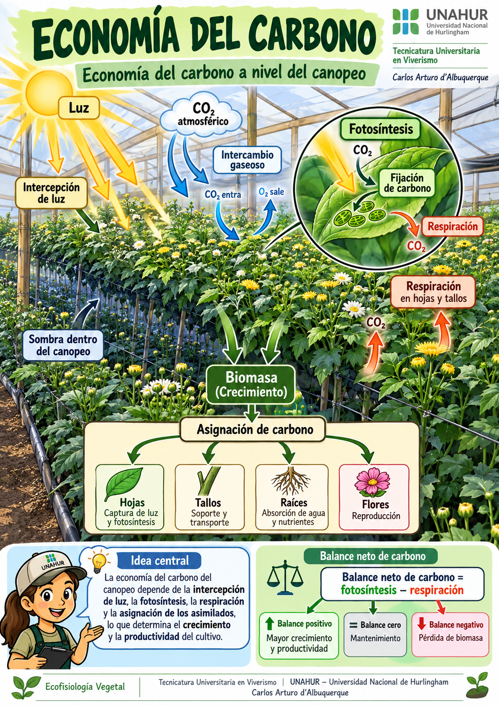

UNAHUR · TECNICATURA UNIVERSITARIA EN VIVERISMOUn mundo de luz.
Un mundo de luz.
Una economía
de carbono.
Descubrí cómo las hojas, la luz y el canopeo se conectan. Un recorrido ilustrado para entender, experimentar y estudiar juntos.
12 temas ilustradosA tu ritmoProgreso personal

☀ Luz interceptada→🌿 Fotosíntesis−Respiración=Balance de carbono
01 / EL RECORRIDODe hoja en hoja,
De hoja en hoja,
todo se conecta.
0 de 12 temas estudiadosEl avance se guarda en este navegador.
No hay temas que coincidan con la búsqueda.
Ver la portada y el índice originales ↗
02 / UNA IDEA EN MOVIMIENTOMás hojas.
Más hojas.
¿Siempre más luz?
Mové los controles y explorá cómo el índice de área foliar y el coeficiente de extinción cambian la fracción de luz interceptada.
Modelo didáctico de Beer–Lambert: f = 1 − e−k·IAF. Valores ilustrativos; la arquitectura, el ángulo solar y otras condiciones modifican k.
LUZ INTERCEPTADA POR EL CANOPEO78%
03 / HACÉ CRECER LO QUE SABÉS
Un ratito de repaso.
Probá una pregunta por tema.
Equivocarse también es aprender.
El conocimiento también crece
cuando se comparte.
Revisá las láminas, volvé a los conceptos y estudiá con tus amigos.
Volver al recorrido ↑